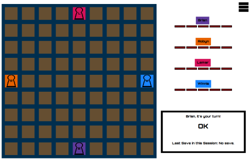
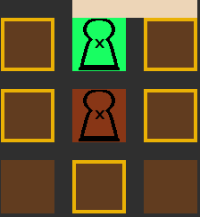
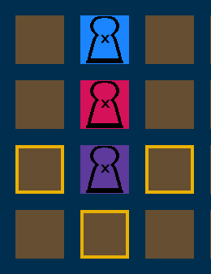
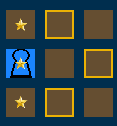

Starting a New Game
Begin by starting a New Game, choose your color set. Each color set modifies the board color and each pawn color. You can also choose each players name and if they're a human player or if they're are a computer AI. There must be four players to begin. Each Computer AI can be set to Easy or Hard difficulty. Click Let's Play when you're all set up to begin play!
Start Of Play
Each player starts at one side of the board, each player is given 5 fences. Every player has a unique pawn and a different goal to win the game. The players goal is to reach the opposite side they started on. First to get there wins! The starting pawn is determined randomly each session. At the start of the match the board is empty except for the starting positions of each pawn.

Taking A Turn
A pawn can move one square at a time, horizontally or vertically, forwards or backwards, never diagonally. Fences block a players path, Fences never move once they're placed. Fences take up two total square.
Placing a fence or moving a pawn counts as a turn.
Face to Face pawns can jump over each other or go in any other direction they choose.
Face to Face pawns may also go diagonal if there is a fence behind their opponent.

Face to Face pawns may not jump over more than one pawn at a time.

Fences are strictly impossible to jump over.
A player cannot block another player from leaving a part of the board
End of the Game
When a player reaches the opposite side of where they began the game is over. The first player to do so is the Winner!
